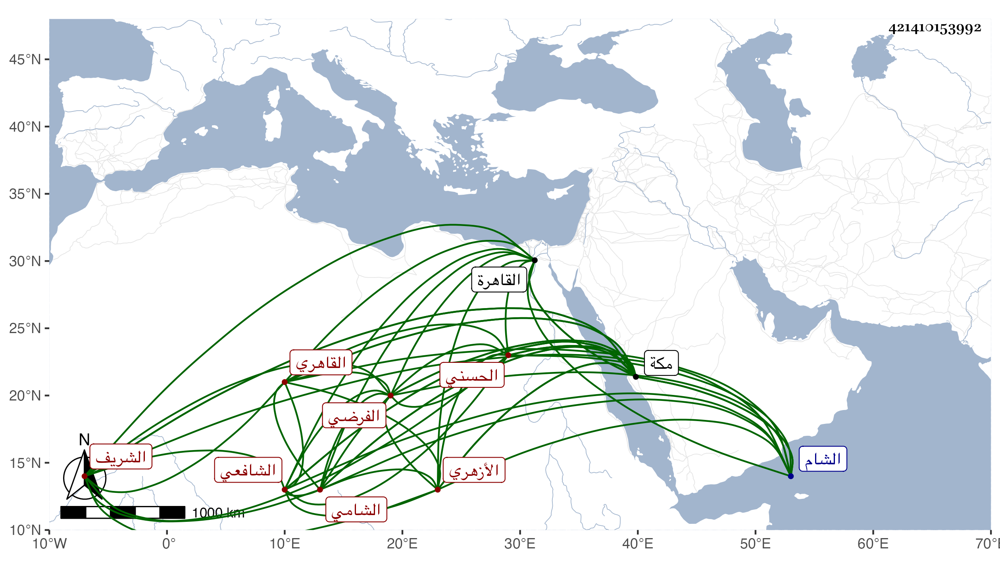

0902Sakhawi.DawLamic.ITO20230111-ara1.EIS1600.421410153992
Biography ID: 421410153992
829
علي بن عبد القادر الشريف نور الدين الحسني الشامي الأصل القاهري الأزهري الفرضي الشافعي ويعرف بالسيد الفرضي . ولد في سنة ثمان وثمانمائة تقريبا بالقاهرة ونشأ بها وجلس ببعض حوانيت البز تاجرا كأخواله فنفد ما معه ، وسافر إلى الشام ثم عاد فحضر مجالس شيخنا ولازم ابن المجدي في الفرائض والحساب والجبر والمقابلة ونحوها ملازمة كثيرة حتى أنه كما ذكر أخذ عنه قراءة أو سماعا أشكال التأسيس في الهندسة وكان يسأله عن كل ما يعسر عليه فهمه فيحققه له ولهذا برع . ولما مات تصدى للإقراء وتقدم في ذلك بحيث كاد أن ينفرد بفني الحساب المفتوح والغبار والجبر والمقابلة والفرائض لعلمه بأصول الفنون المذكورة وطرق أعمالها واستحضاره لذلك بدون تكلف حتى أنه يقرئ مشكلاتها بدون مطالعة ولا مراجعة مع سرعته في التقرير وعدم النهضة لمجاراته فيه إلا من إفراد ، وصنف في الفن الأول شرحا على الوسيلة سماه الفوائد الجليلة في حل الألفاظ الوسيلة في غاية الحسن وفي الفن الثاني شرحا على المبتكرات لشيخه سماه الفوائد الربانية في شرح المبتكرات الحسابية غاية أيضا في بابه وكتب على مجموع الكلائي شرحا لم يكمله سماه عين المسموع في شرح المجموع إلى غير ذلك من بيان أعمال مشكلة وتنبيه على مناقشات مع أصحابها وتقييدات وإيضاحات وغير ذلك مما يقيده بهوامش الكتب لا سيما القالة الثانية من مختصر شيخه في الفرائض والمعرفة لابن الهائم بل كان عنده عليها أوراق كثيرة التمس منه جماعة من الفضلاء إفرادها في تأليف فما تيسر . واشتهر بهذا الفن جدا وقصد بالمناسخات ونحوها من الأعمال المشكلة وكان يأخذ الأجرة على ذلك واحتاج ابن البارزي إلى قسمة بلد فلم يجد من يعملها غيره فأثابه على عمله نحو خمسين دينارا وكانت له مع ذلك مشاركة ما في الفقه حضر فيه عند القاياتي والونائي وسمع على أولهما شيئا من العلوم الآلية إلا أنه لم يتصد لغير ما قدمته بل ولا برع في غيره وقد أخذ عنه الفضلاء كالأبناسي وابن خطيب الفخرية والشرف السنباطي والمجيوي الزفتاوي والمحب بن هشام والقمني بل كان الزين قاسم الحنفي يستمد منه ويراجعه كثيرا ولو ألان كلمته وخفض جانبه وسمح بمعلوماته ولم يشح بها لكان كلمة إجماع ولهذا كان خاملا فقيرا وحيدا أجل ما معه وظيفة التصوف بالأشرفية برسباي ولكن كان يبدي أعذارا والله أعلم بسريرته ، وفي آخر أمره حصل له فهر من أمة كان يتسرى بها . وسافر لمكة لقضاء الفرض في البحر فدخلها وهو متوعك وقاسى شدة وباع عامة ما كان صحبته من الكتب أو جلها واستمر متضعفا حتى حج وزار ورجع إلى وطنه فسلمت عليه وهو مكروب واستمر إلى أن مات في يوم الثلاثاء ثاني عشري ربيع الأول سنة سبعين وصلى عليه في يومه ثم دفن ولم يخلف عاصبا فبيعت تركته بعد يومين ولم يوجد فيها شيء من كتب فنونه ، وقيل أنه كان يقول أنه باعها بمكة ولست أقبل منه ذلك بل عندي أنها إن لم يكن أوصى بها لأحد فقد اختلست ، واستقر بعده في الأشرفية السنباطي أحد جماعته ورأيت بخطه نسخة بشرح ألفية العراقي انتهى من نسخها في سنة أربع وخمسين رحمه الله وعفا عنه وإيانا .
